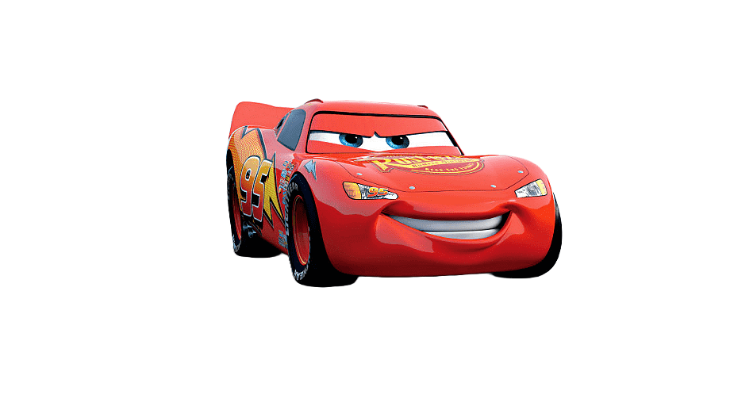
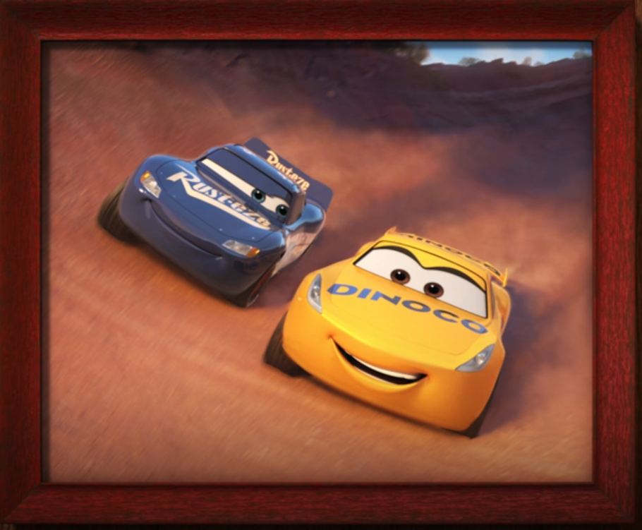

- Racer: Montgomery McQueen
- Alias: Lightning McQueen
- Number: 95
- Team: Rust-eze
Rust-eze's Legacy
A legacy continued by #95.
Before Lightning McQueen became the brand-new face of Rust-eze in 2005, the team was represented by veteran racer Bertie Fast (historic car number 67).
The rookie's arrival marked a new era of pure speed, replacing Bertie's long career and modernizing the brand for new generations of the Piston Cup.

Evolution of a Champion
From arrogant rookie to champion with heart.
McQueen is a competitive and self-confident racer who learned to value loyalty after arriving in Radiator Springs. There, he found his best friend, Mater; the love of his life, Sally Carrera; and his unforgettable mentor, Doc Hudson.
Today, backed by his unwavering pit crew and respected by track rivals like Bobby Swift and Cal Weathers, he races knowing that true victory lies in the family he chose.

The Legacy Continues

From apprentice to master.
With the arrival of high-tech rookies and following a severe crash, McQueen realized that his glory days on the track were changing. That was when he met Cruz Ramirez, a brilliant trainer with a suppressed dream of becoming a racer.
Remembering everything Doc had done for him, Lightning made the noblest decision of his career: giving up his spot in the decisive Florida 500 race. Stepping into the role of crew chief, McQueen provided the coaching, strategy, and confidence Cruz needed to defeat her rivals and win her first Piston Cup, thereby bringing his own story full circle.
Piston Cups
7 Piston Cups.
A historic tie with the legend "The King," Strip Weathers. A career defined by sheer speed.